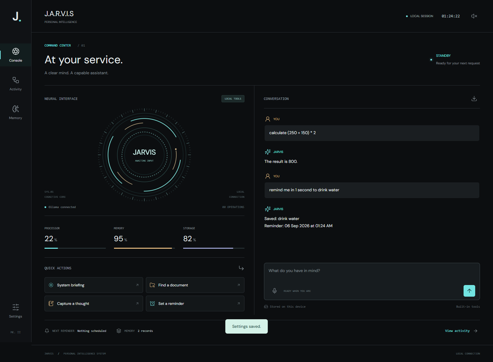
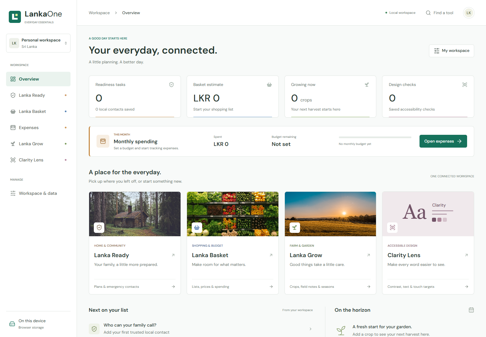

JARVIS
Local AI assistantA personal assistant with a local-model workflow, notes, reminders, and a browser-based command console.
Explore the source
Available for opportunities
Software developer.
Curious by nature.
I build software, explore local AI, and create interactive experiences. Computer Science student at IIT, based in Sri Lanka.
01 / Selected work
A selection of personal projects across
software, AI, and interactive media.

A personal assistant with a local-model workflow, notes, reminders, and a browser-based command console.
Explore the source
A combined website for everyday planning in Sri Lanka, including monthly expenses and tools that save data on your device.
Explore the sourceCareer recommendations and job simulation through an accessible web experience.
A desktop application for medicines, inventory, and transactions, built with JavaFX and MySQL.
A first-person underwater escape game with countdown puzzles, built in Unreal Engine 5.
02 / A little about me
I'm a Computer Science student who enjoys turning an idea into something people can use.
I'm pursuing my BSc at IIT, affiliated with the University of Westminster. My interests span full-stack development, artificial intelligence, and game development.
From a local assistant to a desktop inventory system, my projects give me opportunities to explore how interfaces, data, and application logic fit together.
IIT / University of Westminster
2023 – Present
03 / Expertise
Applied through projects.
Always learning something new.
Application logic, desktop interfaces, and persistent data.
In practice: JARVIS & PharmacyResponsive interfaces and practical browser-based tools.
In practice: Lanka One & CareerVerseLocal-model integrations and game mechanics.
In practice: JARVIS & The Last DiveOpen to opportunities
Have a project in mind or an opportunity to share?
I'd be
glad to hear from you.